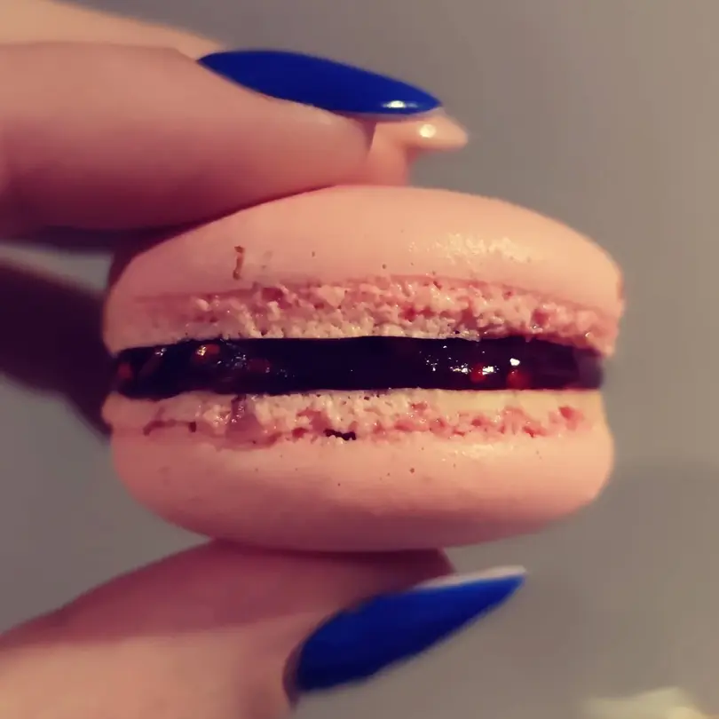
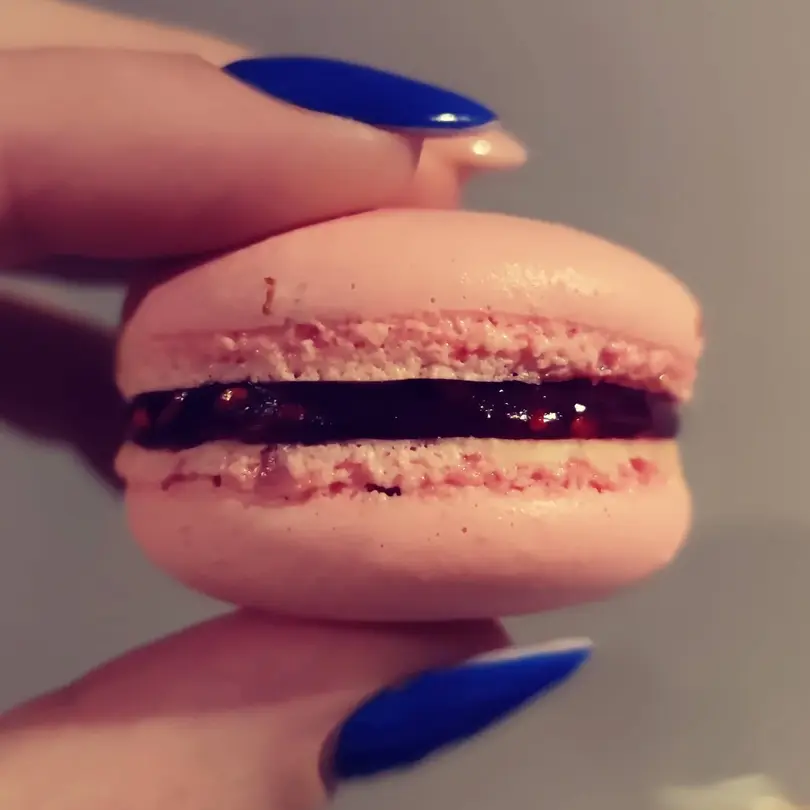

Welcome to my world of baking!

Baking is my story of love and sharing. It started in my childhood and has been growing in my heart since
then.
I learned at my grandma's kitchen in Romania where she taught me and where we spent time together baking
for our family during Christmas holidays.
Pies were my very first creations. It filled my heart seeing my family enjoying them.
As I grew up my interest and curiosity in baking kept going. Creativity came out. I got the taste of
trying new flavours and following my own recipes.
I baked my first cake for my best friend's birthday while we were in college. "I've never eaten a cake
like this" she said. We had some much fun that day!
Baking has become my playground, my escape room. It's my special treat to others.

 
